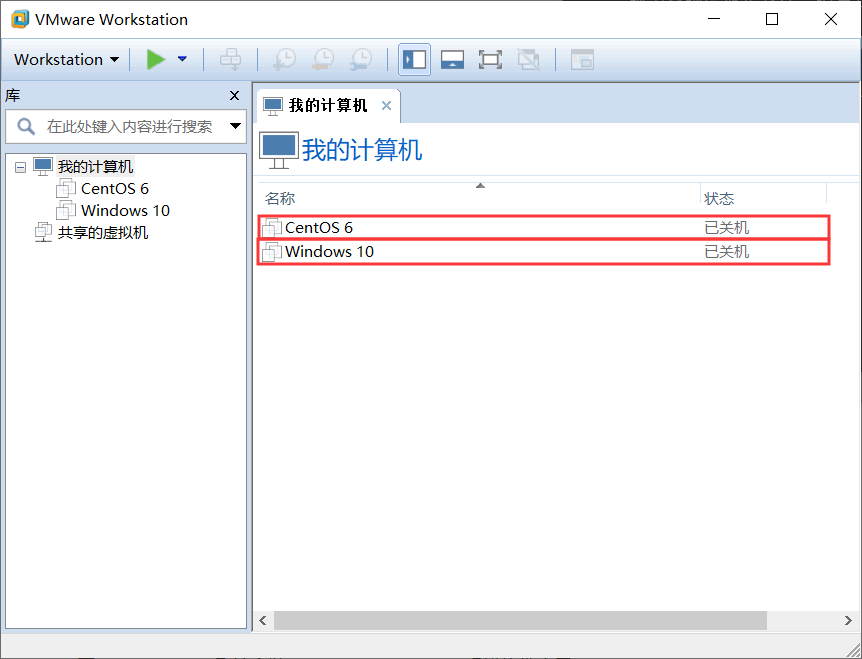

虚拟机是什么
简单地说，虚拟机（Virtual Machine）就是允许我们在当前操作系统中运行其他操作系统的软件，本质上和 VS、QQ 这些应用程序一样。
所以，只要我们在电脑（PC 或笔记本等）上安装好虚拟机软件，就可以模拟出来若干台相互独立的虚拟 PC 设备，每一个都如何一台真实的计算机。在此基础上，我们可以给每台虚拟的 PC 设备安装指定的操作系统，这样就可以实现在一台电脑上同时运行多个操作系统。
如图 1 所示，展示的是在 Windows 10 桌面操作系统上安装的虚拟机软件 VMware Workstation（简称 VMware），这里通过配置 VMware 虚拟出了 2 台 PC 设备，且分别在这 2 台 PC 上安装了 Linux 系统（CentOS 发行版）和 Windows 系统。这 2 个虚拟机同时在一台电脑上独立运行，几乎互不干扰，并且可以同在一个局域网内，还可以互相通信。
经过前面对虚拟机软件的介绍，相信读者应该知道了虚拟机软件到底是什么了吧。下面，笔者介绍一些网友常用的虚拟机软件，如表 1 所示。
所以，只要我们在电脑（PC 或笔记本等）上安装好虚拟机软件，就可以模拟出来若干台相互独立的虚拟 PC 设备，每一个都如何一台真实的计算机。在此基础上，我们可以给每台虚拟的 PC 设备安装指定的操作系统，这样就可以实现在一台电脑上同时运行多个操作系统。
另外，还可以将这些虚拟的系统连成局域网，用来部署网站集群架构等更深层次的运维技术，这样的虚拟技术，有兴趣的读者可以搜索“集群”做详细了解。

图 1 Windows 10系统安装WMware Workstation虚拟软件窗口
图 1 Windows 10系统安装WMware Workstation虚拟软件窗口
如图 1 所示，展示的是在 Windows 10 桌面操作系统上安装的虚拟机软件 VMware Workstation（简称 VMware），这里通过配置 VMware 虚拟出了 2 台 PC 设备，且分别在这 2 台 PC 上安装了 Linux 系统（CentOS 发行版）和 Windows 系统。这 2 个虚拟机同时在一台电脑上独立运行，几乎互不干扰，并且可以同在一个局域网内，还可以互相通信。
经过前面对虚拟机软件的介绍，相信读者应该知道了虚拟机软件到底是什么了吧。下面，笔者介绍一些网友常用的虚拟机软件，如表 1 所示。
| 虚拟机软件 | 特点及选择建议 |
|---|---|
| VM（VMware Workstation） | 工作站版虚拟化软件，简单、易用，适合用于搭建学习环境。 |
| KVM/Xen Linux 的虚拟化 | 服务器级虚拟化软件，适合企业虚拟化应用，不适合用于搭建学习环境。 |
| Virtual PC | MAC 平台可以用 |
| VirtualBox | 开源的虚拟机软件 |
关注公众号「站长严长生」，在手机上阅读所有教程，随时随地都能学习。内含一款搜索神器，免费下载全网书籍和视频。

微信扫码关注公众号